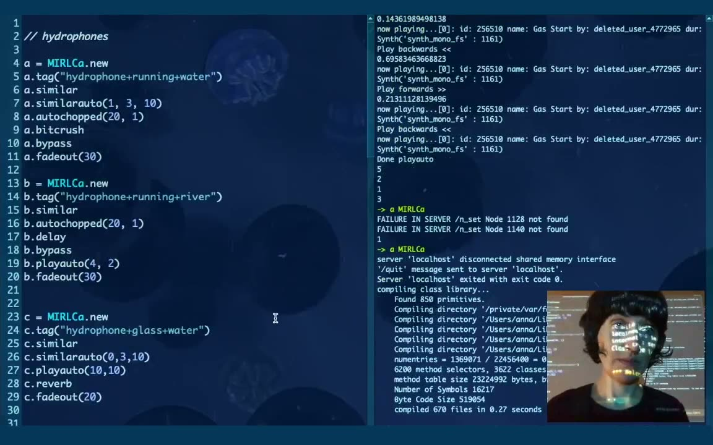
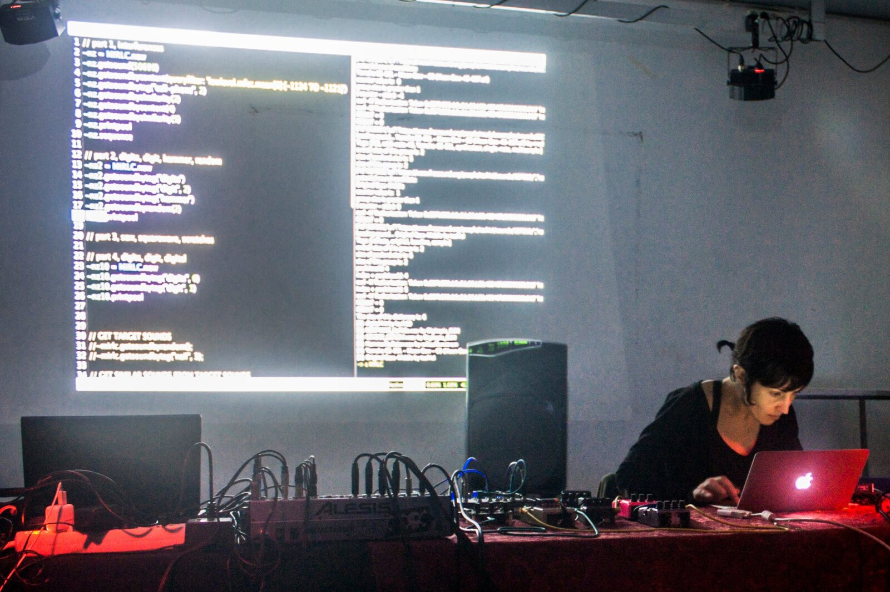

A Live Coding Session With the Cloud and a Virtual Agent
PROJECT DESCRIPTION
Live coding brings together music and code in live performance and has been practised for almost two decades [1]. Live coding using online crowdsourced sounds can be seen as a type of asynchronous collaboration. This approach can bring a rich, multifaceted range of timbres. However, there is a risk in the unpredictability of search results. The use of a virtual agent (VA) can complement a human live coder in her/his practice reducing this potential issue.
This live coding performance is a collaboration between a human live coder and a VA. MIRLCa1 is a self-built SuperCollider extension and a follow-up of the also self-built SuperCollider extension MIRLC [2]. The system combines machine learning algorithms with music information retrieval techniques to retrieve crowdsourced sounds from the online database Freesound [3], which results in a sound-based music style. In this performance, the live coder will explore the online database by only retrieving sounds predicted as “good” sounds when using the retrieval methods from the live coding system. This approach aims at facilitating serendipity instead of randomness in the retrieval of crowdsourced sounds.
A VA has been trained to learn from the musical preference of a live coder based on context-dependent decisions, ‘situated musical actions’ [4]. Adapted from Lucy Suchman’s concept of situated action [5], a situated musical action refers to any musical action related to a specific context, where the VA is expected to help the user in that action within that context. A binary classifier based on a multilayer perceptron (MLP) neural network has been used for sound prediction. For more background on aspects of the live coding tool used to develop this project, see [6][7][2].
PROGRAM NOTES
This live coding performance is a collaboration between a human live coder and a virtual agent (VA). MIRLCa is a self-built SuperCollider extension and a follow-up of the also self-built SuperCollider extension MIRLC. The system combines machine learning algorithms with music information retrieval techniques to retrieve crowdsourced sounds from the online database Freesound.org, which results in a sound-based music style. In this performance, the live coder will explore the online database by only retrieving sounds predicted as “good” sounds when using the retrieval methods from the live coding system. This approach aims at facilitating serendipity instead of randomness in the retrieval of crowdsourced sounds. The VA has been trained to learn from the musical preference of a live coder within context-dependent decisions, ‘situated musical actions’. A binary classifier based on a multilayer perceptron (MLP) neural network has been used for sound prediction. The themes of legibility, agency and negotiability in performance will be sought through the collaboration between the human live coder, the virtual agent live coder and the audience. This project has been funded by the EPSRC HDI Network Plus Grant - Art, Music, and Culture theme.
PERFORMANCE REQUIREMENTS
The approximate duration of this performance is 15 minutes. It is also possible a shorter or longer duration. The preferred format is stereo online delivery, which can be either a real-time session or a pre-recorded session. The live coder will be sending a video stream showing her screen. Ideally, if there is an audience in a performance venue, there should be a projector showcasing the video stream and the in-house PA system can be used to amplify the audio sent from the video stream. The requirements are summarized next:
Stereo video stream sent by the live coder (alternatively a pre-recorded video).
If there is an audience in a performance venue:
In-house PA system.
A projector.
This solo performance is improvised. Previous online solo performances of related work have been presented at:
Transnodal TOPLAP, 2021.
IKLECTIK Offsite in London, 2020.
Sound Junction Satellites University of Sheffield Concerts/Algomech, 2020.
Network Music Festival, 2020.
Eulerroom Equinox, 2020.
ACKNOWLEDGEMENTS
This project has been funded by the EPSRC HDI Network Plus Grant - Art, Music, and Culture theme.

▶Anna Xambó’s performance at the event “Similar Sounds: A Virtual Agent in Live Coding”, IKLECTIK 2020. Video source: https://youtu.be/ZRqNfgg1HU0


Anna Xambó. Photo by Helena Coll.
Footnotes
Citations
- ↩Collins, N., McLean, A., Rohrhuber, J., & Ward, A. (2003). Live Coding in Laptop Performance. Organised Sound, 8(3), 321–330.
- ↩Xambó, A., Lerch, A., & Freeman, J. (2019). Music Information Retrieval in Live Coding: A Theoretical Framework. Computer Music Journal, 42(4), 9–25.
- ↩Font, F., Roma, G., & Serra, X. (2013). Freesound Technical Demo. In Proceedings of the 21st ACM International Conference on Multimedia (pp. 411–412).
- ↩Xambó, A., Roma, G., Roig, S., & Solaz, E. (2021). Live Coding with the Cloud and a Virtual Agent. In Proceedings of the International Conference on New Interfaces for Musical Expression. Shanghai, China: New York University Shanghai.
- ↩Suchman, L. A. (1987). Plans and Situated Actions: The Problem of Human-Machine Communication. Cambridge University Press.
- ↩Xambó, A., Roma, G., Shah, P., Freeman, J., & Magerko, B. (2017). Computational Challenges of Co-Creation in Collaborative Music Live Coding: An Outline. In Proceedings of the 2017 Co-Creation Workshop at the International Conference on Computational Creativity. Atlanta, GA, USA.
- ↩Xambó, A., Roma, G., Lerch, A., Barthet, M., & Fazekas, G. (2018). Live Repurposing of Sounds: MIR Explorations with Personal and Crowdsourced Databases. In T. M. Luke Dahl Douglas Bowman (Ed.), Proceedings of the International Conference on New Interfaces for Musical Expression (pp. 364–369). Blacksburg, Virginia, USA: Virginia Tech.